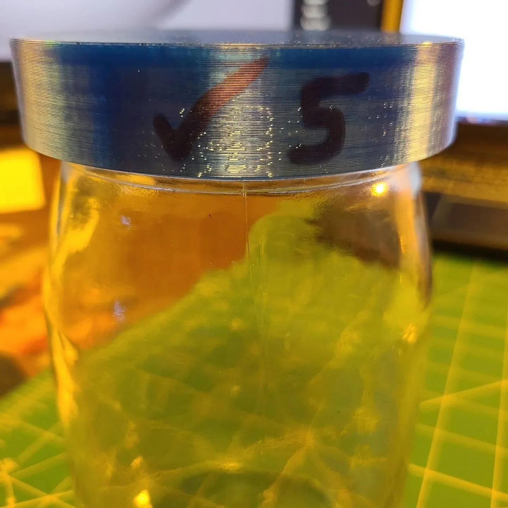

Piece / projectA lid that starts with the thread
A reverse-engineered jar lid with a 1/4-inch pitch and a translucent-blue prototype.
3D printing • Repair & adaptation
A broken plastic joint became a reverse-engineering project instead of a reason to replace the whole wardrobe.
A cracked fitting left an existing wardrobe in need of repair.
Reverse-engineer the connection and print a PETG replacement.
Replacement fitting photographed installed on the existing rails.
Reverse engineering and fabrication of a replacement fitting.
A printed replacement fitting shown installed on the existing wardrobe.
The wardrobe was still useful, but one cracked plastic fitting stopped the rail connection from working. I modeled that fitting in Fusion and printed a PETG replacement instead of replacing the whole wardrobe.
The new part had to match the existing rails and connect in the same place as the broken fitting. That made the measurements and mating surfaces more important than changing the overall shape for appearance.
The installed photo shows the replacement fitted to the existing rails. I did not perform a formal load test, but the part solved the connection shown in the original repair.
The wardrobe was still useful, but one cracked plastic fitting stopped the rail connection from working. I measured the broken part, rebuilt the geometry in Fusion, and printed a PETG replacement that fit the existing rails. The hard part was matching the interfaces that were already there, not changing the outside for appearance. The installed photo shows the replacement back in place. I did not perform a formal load test, so I keep the claim to the repair shown.
Replacement work: Michael Pytlowany. The original wardrobe and its hardware are existing products.
The installed photograph is cropped to focus on the fitting and exclude unrelated household detail. The record documents the repair, not a quantified load or service-life test.
Jerky_FPV project archive
2021-06-27
IN THE 3D MODEL LIBRARY